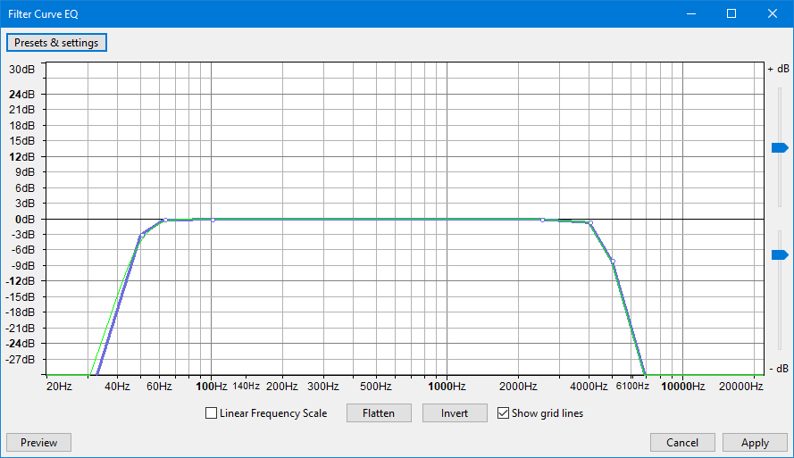

Filter Curve EQ
From Audacity Development Manual
Filter Curve EQ is an equalization tool, it is an FFT (Fast Fourier Transform) filter. Equalization, is a way of manipulating sounds by Frequency. It allows you to increase the volume of some frequencies and reduce others. This is a more advanced form of the EQ and Tone controls on many audio systems.
As an example of equalization, the curve shown below changes the balance of high and low frequencies in the audio to make it sound like an AM radio broadcast. High frequencies (above 6000 Hz) and low frequencies (below 100 Hz) are reduced in volume by 20 dB.
Equalization is also available in a "Slider" mode, accessed via
Note carefully that when you apply an effect to a time-stretched clip the changed speed of the clip will be automatically rendered.
|
- Accessed by:
- 
Contents
Draw EQ Filter Curves
- Equalization Curves and Control Points: If you look closely at the curve in the image above, you will see it is composed of a blue curve joining together a number of white circles, and a green curve which follows the general shape of the blue curve. The white circles are called "control points". The blue curve is drawn by either clicking in the graph at any position, or clicking on the blue curve and dragging it to a position. Doing either creates a control point at that position, then creating further control points draws the curve. To remove a control point, drag it outside the graph.
The green curve is the one that Audacity actually uses to perform the effect, taking into account the limitations of the equalization algorithm. The green curve usually follows the blue curve closely, but will be forced to a smoother path if there are sudden changes in amplitude over a small frequency range. -
 Linear Frequency Scale: When this box is unchecked, the horizontal frequency scale is logarithmic, giving more detail at the lower frequencies. This corresponds roughly to our greater sensitivity to lower frequencies. When checked, the frequency scale is linear, displaying equal frequency ranges for each unit of the scale. This can be useful for precision adjustments at high frequencies.
Linear Frequency Scale: When this box is unchecked, the horizontal frequency scale is logarithmic, giving more detail at the lower frequencies. This corresponds roughly to our greater sensitivity to lower frequencies. When checked, the frequency scale is linear, displaying equal frequency ranges for each unit of the scale. This can be useful for precision adjustments at high frequencies.
Example: You want to make an audio selection sound "brighter" by reducing the frequencies below 100 Hz by 10 dB, and increasing those over 5000 Hz by 10 dB:
- If the line in the graph is not already horizontal at the 0 dB position, click "Flat" (see below).
- Click at the point that is opposite both -10 dB on the vertical scale and 100 Hz on the horizontal scale.
- Click at the point that is opposite both +10 dB on the vertical scale and 5000 Hz on the horizontal scale.
- Create extra control points if desired between 100 Hz and 5000 Hz to modify whether particular frequencies between those two levels should be reduced or increased in volume.
| No account is taken of whether your equalization curve will result in the selection being amplified beyond the clipping (distortion) level. If your curve amplifies any frequencies, especially the lower frequencies which are normally the loudest, the track(s) first to -3 dB or lower. If necessary you can always the Equalization, Normalize again to a lower level, then re-apply Equalization. |
Graph Scale and Sliders
- Vertical Scale: This scale is in dB and shows the amount of gain (amplification above 0 dB or attenuation below 0 dB) that will be applied to the audio at any given frequency.
- Horizontal Scale: This shows the frequencies in Hz to which volume adjustments will be applied. Dragging the Equalization window wider displays some additional points on the scale and makes it easier to plot the graph accurately.
- Vertical scale sliders: By default the vertical scale reads from + 30 dB to - 30 dB, but these two sliders to left of the scale let you adjust the upper and lower dB values so as to change the visible range on the graph. Note that moving either slider changes the horizontal position of the 0 dB line. Reducing the visible range lets you make a finer adjustment to how loud the frequencies sound, but the changes will be more subtle because the volume adjustment will be less.
Equalization settings
- : A quick way to set a "level response curve". This means the curve on the graph is drawn from left to right at 0 dB on the vertical scale, so that no frequencies will have their volume level modified.
- : Turns the current curve in the window upside down, changing positive gains at a particular frequency into negative, and vice versa.
-
 Show Gridlines: draws the gridlines on the window aiding accurate positioning of control points. Default setting is "on".
Show Gridlines: draws the gridlines on the window aiding accurate positioning of control points. Default setting is "on".
Filter Curve EQ now facilitates the import of pre-existing equalization curves, using the button, for use in the effect.
|
Limitations
- To process Equalization, all tracks in the project must have the same sample rate. To change the sample rate of a track without affecting speed or pitch, use .
- Filter Curve EQ supports a maximum of 200 control points.